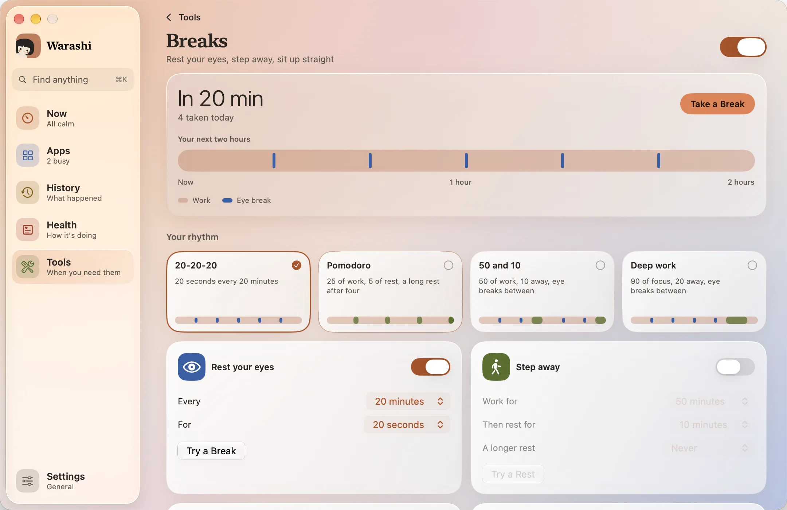
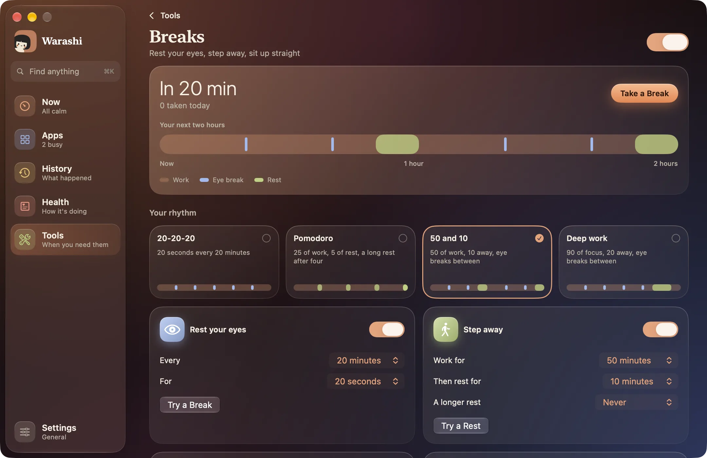

Regarder un écran pendant des heures fatigue vos yeux et votre dos. Pauses vous rappelle de détourner le regard de temps en temps, de vous éloigner selon un rythme qui vous convient, et attend poliment quand vous êtes occupé. C’est désactivé tant que vous ne l’activez pas.
- Ouvrir Pauses
Cliquez sur la carte Pauses dans Outils, ou sur Ouvrir Pauses dans Réglages › Pauses. Activez-les avec l’interrupteur en haut. En haut de la page : le moment de votre prochaine pause, et Vos deux prochaines heures, une barre de votre travail, de vos pauses pour les yeux et de vos repos, à partir de l’état actuel de vos minuteurs.


- Choisir un rythme
Cliquez sur l’une des quatre cartes sous Votre rythme, chacune avec une petite barre de son schéma : 20-20-20 (par défaut : toutes les 20 minutes, regardez au loin pendant 20 secondes), Pomodoro (25 minutes de travail, 5 de repos, et 15 après chaque quatrième), 50 et 10 et Travail profond (90 minutes, puis 20). Changez quoi que ce soit en dessous et il devient Personnalisé.
- Ou réglez le vôtre
Dans les tuiles ci-dessous : les Pauses pour les yeux reviennent Toutes les 5 à 60 minutes, Durant 10 à 60 secondes. Les Pauses repos vous éloignent de l’écran : Travailler 15 à 120 minutes, Puis se reposer 2 à 30 et, si vous voulez, Une pause plus longue tous les 2 à 5 repos. Essayer une pause et Essayer une pause vous en montrent une tout de suite.
- D’abord, une précision
Quinze secondes avant une pause, une petite pastille sous la barre des menus indique Pause dans 0:15, avec Commencer, +5 min et Passer.
- Faire la pause
La pause floute doucement tous les écrans, avec un compte à rebours et une suggestion, par exemple « Regardez quelque chose au loin. » ou, pour un repos, « Levez-vous et étirez-vous. » Un léger carillon indique la fin. Passer, ou Esc, l’arrête plus tôt.
Petits rappels
Entre les pauses, deux petits moments d’environ quatre secondes qui ne bloquent jamais vos clics. Tenez-vous droit monte du bas de l’écran jusqu’au niveau des yeux pendant que son petit personnage se redresse : vos yeux, et votre tête, le suivent (toutes les 30 minutes par défaut, ou toutes les 5 à 90). Clignez des yeux sort de l’encoche avec un œil qui cligne deux fois (désactivé par défaut, ou toutes les 5 à 30 minutes).
Comment les pauses repos et les pauses pour les yeux s’articulent
- Une pause pour les yeux prévue moins de cinq minutes après une pause repos est ignorée : le repos la remplace. Une pause repos relance aussi les minuteurs des pauses pour les yeux et de la posture.
- Être loin de votre Mac aussi longtemps qu’une pause repos compte comme cette pause.
- La mise en veille ou le verrouillage de l’écran relance le minuteur de travail, mais Pomodoro se souvient du nombre de pauses que vous avez prises.
Elle attend quand vous êtes occupé
- Une pause due attend tant que votre micro ou votre caméra est utilisé, ou qu’un jeu en plein écran est au premier plan. Elle attend aussi quand une autre app garde l’écran allumé, comme une vidéo ou une présentation, sauf si vous désactivez Attendre pendant une vidéo. Outils affiche En attente.
- Dès que l’avertissement de 15 secondes s’affiche, la pause tient sa promesse : seul un appel qui démarre peut la retarder.
- Le temps d’absence compte : cinq minutes loin du clavier et de la souris, la mise en veille ou le verrouillage de l’écran relancent le minuteur des pauses pour les yeux.
- Warashi ne vérifie cela qu’au moment où une pause est prévue, n’en enregistre rien et ne demande aucune autorisation.
En lancer une vous-même
Appuyez sur Pause dans la fenêtre de la barre des menus ou dans l’encoche, sur Faire une pause dans Outils, ou activez Lancer une pause avec ⌃⌥⌘B sur la page Pauses. Ce raccourci fonctionne même quand les rappels sont désactivés ; appuyez à nouveau pour terminer la pause.